1과목: 유통경영
1. 조직행동연구나 소비자행동연구에서 중요하게 다루는 동기이론 중에서, 아래의 내용은 무엇과 관련된 내용인가?
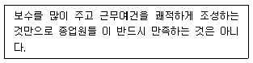
2. 카리스마적 리더십(Charismatic Leadership)의 특징과 거리가 가장 먼 것은?
3. 근로기준법의 설명으로 옳지 않은 것은?
4. 직무분석과 관련된 설명으로 가장 틀린 것은?
5. 유통업체인 (주)대한은 직접 상품을 생산하기 위해 2012년에 제조업을 시작하였으며, 아래는 2012년 자료이다. 정상조업도는 5,000개이고 실제조업도는 4,000개(비정상적으로 낮은 조업도)일 경우, 2012년에 단위당 제조원가와 당기비용으로 처리될 금액은? (단, 2013년부터 제품의 판매가 시작된다.)
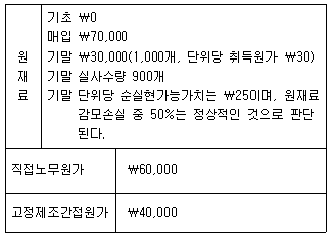
6. 교육 또는 훈련에 대한 설명으로 가장 적합하지 않은 것은?
7. 불쾌하고 부정적인 결과를 제거해 줌으로써 바람직한 행동이 반복되게 하는 것을 말하며, 잔소리가 심한 상사가 하급자의 계속적인 실적개선을 보고 잔소리를 줄이게 되는 것을 무엇이라 하는가?
8. 인사고과에 대한 설명으로 가장 옳지 않은 것은?
9. 인사관리(personal management)에 대한 설명으로 가장 부적합한 내용은?
10. 조직형태에 대한 설명으로 가장 옳은 것은?
11. 조직(organization)에 대한 설명으로 가장 적합하지 않은 것은?
12. 조직에 대한 일반적인 설명으로 가장 옳지 않은 설명은?
13. 조직의 지도원리 중 하나인 효과성(effectiveness)에 대한 설명으로 가장 옳지 않은 것은?
14. 테일러(Taylor)의 과학적 관리법(scientific management)과 가장 관련이 없는 것은?
15. 다음 중에서 경영분석 시에 사용되는 비율분석의 장점 또는 유용성이라고 보기 어려운 것은?
16. 유통기업의 매출원가와 관련된 설명 중 올바르지 않은 것은?
17. 현금예산(cash budget)에 대한 아래의 설명 중에서 옳지 않은 것은?
18. 다음 중 경제적 부가가치(EVA)에 대한 설명으로 바르지 않은 것은?
19. 기업이 보유하는 자산을 얼마나 효율적으로 이용하고 있는지를 나타내는 활동성비율에 속하지 않는 것은?
20. ‘각자가 관심을 갖고 있는 목적을 달성하기 위한 모임’이란?
2과목: 물류경영
21. 물류센터(Logistics center)에 대한 설명으로 가장 거리가 먼 것은?
22. 화물의 하역과 보관에 시용을 하는 랙(Rack)에 대한 용어 설명으로 적합하지 않은 것은?
23. 컨테이너 터미널(Container terminal)에 대한 설명으로 가장 옳지 않은 것은?
24. 컨테이너선을 항만 내에 계선시키는 시설을 갖춘 접안장소를 무엇이라 하는가?
25. 포장물류(Packaging Logistics)에 대한 설명으로 가장 어울리지 않는 것은?
26. 기업의 재고관리(Inventory management)에 대한 설명으로 옳지 않은 것은?
27. 운송(transportation)활동에 대한 설명으로 가장 적합하지 않은 항목은?
28. 물류의 표준화(Standardization)에 대한 설명으로 가장 잘못된 것은?
29. 다음 물류활동의 영역에서 회수물류영역에 해당되지 않은 것은?
30. 물류(Logistics)의 기본이론에 대한 내용으로 가장 부적합한 설명은?
31. 가장 올바른 e-Marketplace의 발전단계를 고르시오.
32. QR의 로지스틱스가 더욱 발전하면 매장에 그대로 진열할 수 있도록 행거설치와 가격태그가 부착된 상품이 물류센터를 거치지 않고 제조업체로부터 소매점포로 직접 보는 것을 무엇이라 하는가?
33. 데이터웨어하우스의 특징으로 가장 옳지 않은 것은?
34. 로지스틱스 관점에서의 포장 기능과 거리가 먼 것은?
35. (주)대한상사의 컴퓨터 판매량은 매월 1,000대이고 EOQ(경제적주문모형)공식에 의거하여 계산한 결과 1회 주문량은 1,200대이다. 연간 주문횟수, 평균재고량, 컴퓨터재고의 평균흐름시간의 순으로 올바르게 계산한 것은?
36. 물류정책기본법 제2조에 “물류공동화”란 물류기업이나 화주기업들이 물류활동의 효율성을 높이기 위하여 물류에 필요한 ( ) 등을 공동으로 이용하는 것을 말한다. ( ) 안의 내용으로 가장 적절하지 않은 것은?
37. 국토교통부 기업물류비 산정지침에 따른 물류비 구분이 가장 옳지 않은 것은?
38. 물류의 7R 원칙에 가장 해당하지 않는 것은?
39. 항공화물과 선박화물의 보관료와 작업료 계산에 대한 설명으로 옳지 않은 것은?
40. e-SCM의 효과에 대한 것으로 가장 잘못된 것은?
3과목: 상권분석
41. 넬슨(Nelson)의 입지선정 8원칙에 대한 설명 중 가장 부적절한 것은?
42. 다음 지역의 소매포화지수를 구하여 이를 토대로 출점 여부를 판단하시오.
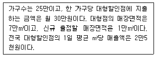
43. 소매점이 집적하게 되면 경쟁과 양립의 이중성을 갖게 되므로 가능하면 양립을 통해 상호이익을 추구하는 것이 좋다. 다음 중 양립과 관련이 적은 것은?
44. 최근 우리나라의 소매입지 및 상권과 관련된 환경적 특징에 관한 설명으로 옳지 않은 것은?
45. 상권분석에 대한 설명 중 올바르지 않은 것은? (문제 오류로 실제 시험에서는 모두 정답처리 되었습니다. 여기서는 1번을 누르면 정답 처리 됩니다.)
46. 할인점에 대한 설명 중 올바른 내용만 모아놓은 것은?
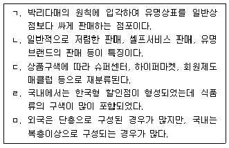
47. 상권조사에 대한 설명 중 가장 적절치 못한 것은?
48. A도시의 인구가 10만명, B도시의 인구는 5만명, 그 중간에 C소도시에는 1만명이 거주하고 있고, A-C거리가 4km, B-C거리는 2km일 때 C소도시에 거주하는 주민 중 B도시를 찾을 주민은 몇 명 정도인지 레일리의 소매인력법칙을 이용하여 구하시오.
49. 호별방문 조사의 목적과 가장 거리가 먼 것은?
50. 도시의 내부구조를 토지 이용 면에서 고찰하려는 목적에서 발전한 토지이용 입지이론에 대한 설명 중 가장 올바르지 않은 것은?
51. 컨버스(Converse)가 제시한 수정소매인력법칙에 대한 설명 중 올바른 것만 모두 묶은 것은?
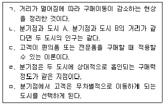
52. 예상 매출액을 구하는 방법 중 다음과 같이 계산하는 방법은?
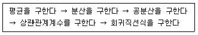
53. 소매업의 중심성(centrality) 지수 및 공간적 분포와 관련된 설명으로 옳지 않은 것은?
54. P도시의 인구는 1만 명이고 연간 1인당 '가'상품 구입액은 3천원이다. 현재이 상품을 판매하는 점포는 A, B, C가 있으며 새롭게 D상점이 출점하려 한다. MCI 모델(Multiplicative Competitive Interaction)을 이용하여 신규점포의 연간 예상매출액을 구하시오.
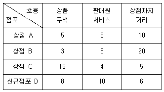
55. 소매점의 매출을 결정하는 요인은 크게 입지요인과 상권요인으로 구분할 수 있다. 다음 중 입지요인에 속하지 않는 것은?
56. 허프(Huff)모델을 이용한 신규점포 매출액 추정절차에 대한 설명 중 가장 적절치 못한 것은?
57. 상권에 대한 설명 중 가장 올바른 것은?
58. 쇼핑센터 입지를 분석/평가하는 내용과 거리가 먼 것은?
59. 다음은 어떤 소매업태의 입지요인과 가장 일치하는가?
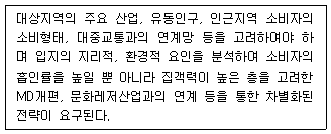
60. 신규 출점 여부를 판단하는 과정이 가장 옳게 연결된 것은?
4과목: 유통마케팅
61. 서비스 매트릭스에 대한 설명 중 옳은 항목만으로 구성된 것은?
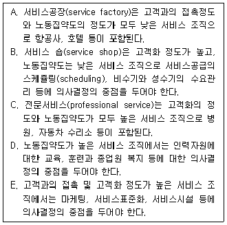
62. 기본적 필수품목(staples)의 재고관리를 위해 가장 중요한 정보를 고르시오.
63. 매장 안에서 비주얼 머천다이징(VMD을 구성하는 방법 중 아래의 내용과 일치 하는 것은?
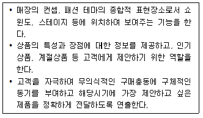
64. 상품 진열의 기본적 방법과 활용에 대한 설명으로 가장 올바르지 않은 것은?
65. 유통업체의 회계처리와 관련된 용어에 대한 설명으로 가장 올바르지 않은 것은?
66. 경쟁자를 파악하기 위한 방법 중 고객중심적인 방법으로 가장 거리가 먼 것은?
67. 고객의 심리와 행동에 의해 형성된 가격의 개념들에 대한 설명 중 올바르게 설명한 것은?
68. 고객계열화에 대한 설명으로 가장 올바르지 않은 것은?
69. 재고관리(inventory management)에 대한 설명으로 가장 올바르지 않은 것은?
70. 상품기획 또는 머천다이징 전략을 수립할 때 가장 유용하게 사용할 수 있는 재무 개념은?
71. Y점포의 금년도 매출 예산은 120억원이며 예정상품회전율은 연 8회이다. 10월의 월매출예산이 20억원이라고 가정할 때, 10월의 월초계획재고액에 가장 가까운 것을 '백분율 변경법'에 의한 설정방법을 활용하여 구하시오.
72. 다음 중 적절하지 않은 항목만으로 구성된 것은?
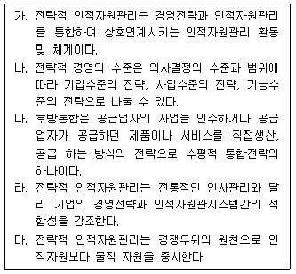
73. 재무제표의 작성과 표시를 위한 개념체계에 대한 설명으로 옳지 않은 것은? (단, 보고기간(회계기간)은 매년 1월 1일부터 12월 31일까지이며, 기업은 주권상장법인으로서 한국채택국제회계기준(K-IFRS)을 계속적으로 적용하여 오고 있다고 가정)
74. (주)대한유통은 분권화된 세 개의 사업부(X, Y, Z)를 운영하고 있다. 이들은 모두 투자 중심점으로 설계 되어 있으며, 최저 필수 수익률은 20%일 때 투자수익률(ROI)이 높은 사업부를 순서대로 나열한 것은?
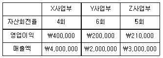
75. STP(segmentation, targeting, and positioning)에 관한 설명으로 가장 적절하지 않은 것은?
76. 소매업의 포지셔닝 전략에 대한 설명으로 가장 올바르지 않은 것은?
77. 상품 범주(카테고리) 관리의 8단계에서 괄호 안에 차례대로 적합한 용어는?
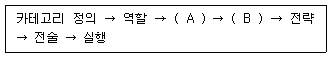
78. 소매업체의 부채와 소유주 지분에 대한 설명으로서 가장 옳지 않은 설명을 고르시오.
79. 기업이 새로운 제품을 추가할 때 고려할 수 있는 브랜드 전략에 관한 내용 중 가장 적절하지 않은 것은?
80. 서비스의 마케팅믹스 중 물리적 증거에 대한 설명으로 가장 올바르지 않은 것은?
5과목: 유통정보
81. B2C 전자상거래 성공요인 중 기술차원과 가장 거리가 먼 것은?
82. 기업의 입장에서 전자상거래를 통해 얻을 수 있는 이익으로 가장 거리가 먼 것은?
83. 골드렛(Dr. Eliyahu Goldratt)이 주창한 DBR (drum-buffer-rope)원리에 대한 설명으로 가장 옳지 않은 것은?
84. 새로운 네트워크 사회에서 디지털 경영환경이 가지는 특성으로 가장 옳지 않은 것은?
85. SCM을 성공적으로 이끌기 위해서 갖추어야 할 성공요소로 가장 거리가 먼 것은?
86. 데이터베이스의 데이터 품질을 평가하는 기준으로 가장 거리가 먼 것은?
87. 인터넷을 통해 상거래를 하는 사람들의 특성으로 가장 거리가 먼 것은?
88. 디지털 정보에 대한 내용 중 가장 옳지 않은 것은?
89. 다음 설명 중 가장 잘못된 것은?
90. 물류정보시스템에 대한 설명으로 가장 옳지 않은 것은?
91. 유통정보시스템(Distribution information system)에 대한 설명으로 가장 옳지 않은 것은?
92. 다음의 보기 중에서 전자상거래 조직이 아닌 것은?
93. CPFR 5단계 프로세스의 순서가 가장 옳은 것은? (기출문제 정답을 확보하지 못하여 임의로 정답을 1번으로 설정하였습니다. 정확한 정답을 아시는분 께서는 오류신고를 통하여 정답 작성 부탁 드립니다.)
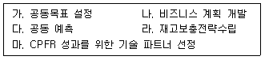
94. GS1 시스템의 기본 원칙에 대한 다음의 내용 중에서 가장 옳지 않은 것은?
95. 유통정보화기술(Distribution information technology)에 대한 설명으로 가장 옳지 않은 것은?
96. 의사결정지원시스템(DSS: Decision Support System)에 대한 설명으로 가장 옳지 않은 것은?
97. 전자상거래(Electronic Commerce) 프로세스에 대한 설명으로 가장 옳지 않은 것은?
98. 정보(information)에 대한 설명으로 가장 옳지 않은 것은?
99. 유통정보시스템의 기획단계 활동으로 가장 적합하지 않은 것은?
100. 조직의 업무를 원활하게 운영하기 위한 거래처리시스템의 특징과 가장 거리가 먼 것은?